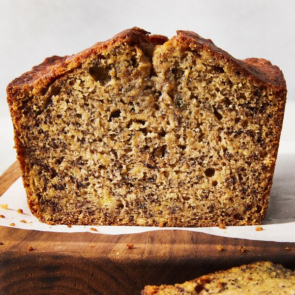

Banana Bread

Simple to bake, yet intense in flavor.
While banana bread doesn't look like much at a glance, a taste of this dessert delivers deliciousness that'll send you satisfied. If you're looking for a quick and easy recipe that still packs flavor, look no further!
Ingredients:
- Cooking spray
- 1 1/2 cup (180 g.) all-purpose flour
- 1 tsp. baking soda
- 1/2 tsp. kosher salt
- 2 large eggs
- 3/4 cup (150 g.) dark brown sugar
- 6 tbsp. unsalted butter, melted, cooled
- 2 cups (460 g.) mashed ripe bananas (from about 4 large)
- 2 tsp. pure vanilla extract
Directions:
- Place a rack in center of oven; preheat to 350°. Grease an 8 1/2" x 4 1/2" metal loaf pan with cooking spray and line with parchment, leaving an overhang on both long sides. In a medium bowl, whisk flour, baking soda, and salt until combined.
- In a large bowl, whisk eggs, brown sugar, and butter until smooth. Add bananas and vanilla and whisk until well combined (batter will be slightly lumpy). Fold in dry ingredients until incorporated.
- Pour batter into prepared pan; smooth top with a rubber spatula.
- Bake bread until risen, golden brown on top, and a tester inserted into the center comes out with a few moist crumbs attached, 50 to 60 minutes.
- Let cool in pan at room temperature at least 1 hour. Using parchment overhang, lift bread out of pan and slice.
Back to index